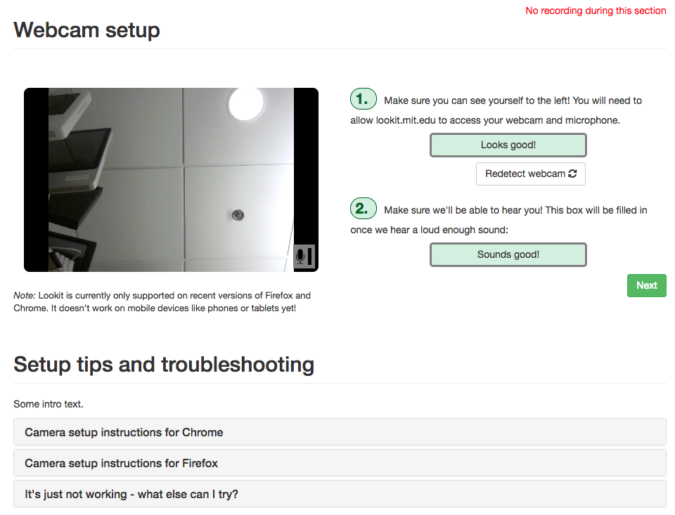

Exp-video-config Class

Video configuration frame guiding user through making sure permissions are set appropriately and microphone is working, with troubleshooting text. Almost all content is hard-coded, to provide a general-purpose technical setup frame.
"frames": {
"video-config": {
"kind": "exp-video-config",
"troubleshootingIntro": "If you're having any trouble getting your webcam set up,
please feel free to call the XYZ lab at (123) 456-7890 and we'd be glad to
help you out!"
}
}
Item Index
Methods
Properties
Methods
beforeUnload
(
String | Null
-
event
Customize what happens when the user exits the page
Parameters:
-
eventEventThe event to be handled
Returns:
String | Null:
If string is provided, triggers a modal to confirm user wants to leave page
destroyRecorder
()
Destroy recorder and stop accessing webcam
hideRecorder
()
Hide the recorder from display. Useful if you would like to keep recording without extra UI elements to
distract the user.
makeTimeEvent
(
Object
-
eventName -
extra
Extend any base time event capture with information about the recorded video
Returns:
Object:
Event data object
pauseRecorder
(
-
[skipIfMissing=false]
Pause the recorder (and capture timing events). For webRTC recorder, this is
just a placeholder and doesn't actually pause the recording. If webRTC used,
includes extra data actuallyPaused: false. This is for backwards compatibility
with frames that pause/resume recording, and should not be used going forward -
instead stop/start and make separate clips if needed.
Parameters:
-
[skipIfMissing=false]Object optionalIf provided (and true), don't raise an error if recording isn't ready yet. Not actually used for WebRTC.
resumeRecorder
()
Resume a paused recording. For webRTC recorder, this is just a placeholder and
doesn't actually pause the recording. If webRTC used, includes extra data
wasActuallyPaused: false. This is for backwards compatibility
with frames that pause/resume recording, and should not be used going forward -
instead stop/start and make separate clips if needed.
setupRecorder
(
Promise
-
element
Set up a video recorder instance
Parameters:
-
elementNodeA DOM node representing where to mount the recorder
Returns:
Promise:
A promise representing the result of installing the recorder
showRecorder
()
Show the recorder to the user. Useful if you want to temporarily show a hidden recorder- eg to let the user fix
a problem with video capture settings
startRecorder
()
Start recording
Returns:
Promise Resolves when recording has started
stopRecorder
()
Stop the recording
Returns:
Promise A promise that resolves when upload is complete
whenPossibleToRecord
()
Observer that starts recording once recorder is ready. Override to do additional
stuff at this point!
Properties
audioOnly
Number
Whether to do audio-only (vs also video) recording. Can be overridden by consuming frame.
Default: 0
autosave
Number
private
Whether to autosave recordings. Can be overridden by consuming frame.
TODO: eventually use this to set up non-recording option for previewing
Default: 1
doUseCamera
Boolean
Whether to use the camera in this frame. Consuming frame should set this property
to override if needed.
Default: true
maxRecordingLength
Number
Maximum recording length in seconds. Can be overridden by consuming frame.
Default: 7200
messageEarlyExitModal
String | Null
The message to display in the early exit modal. Newer browsers may not respect this message.
recorder
VideoRecorder
private
The recorder object, accessible to the consuming frame. Includes properties
recorder.nWebcams, recorder.hasCamAccess, recorder.micChecked, recorder.connected.
recorderReady
Boolean
private
Whether recorder has been set up yet. Automatically set when doing setup.
Accessible to consuming frame.
startRecordingAutomatically
Boolean
Whether to start recording ASAP (only applies if doUseCamera). Consuming frame
should set to override if needed.
Default: false
stoppedRecording
Boolean
private
Whether recording is stopped already, meaning it doesn't need to be re-stopped when
destroying frame. This should be set to true by the consuming frame when video is
stopped.
troubleshootingIntro
String
Text to show as the introduction to the troubleshooting tips section
Default: ""
videoId
String
private
A video ID to use for the current recording. Format is
videoStream_<experimentId>_<frameId>_<sessionId>_timestampMS_RRR
where RRR are random numeric digits.
videoList
List
private
A list of all video IDs used in this mixin (a new one is created for each recording).
Accessible to consuming frame.
Events
pauseVideo
When pausing study, immediately before request to pause webcam recording
recorderReady
When video recorder has been installed
stoppingCapture
Just before stopping webcam video capture
unpauseVideo
When unpausing study, immediately before request to resume webcam recording
videoStreamConnection
When recorder detects a change in video stream connection status
Event Payload:
-
statusStringstatus of video stream connection, e.g. 'NetConnection.Connect.Success' if successful